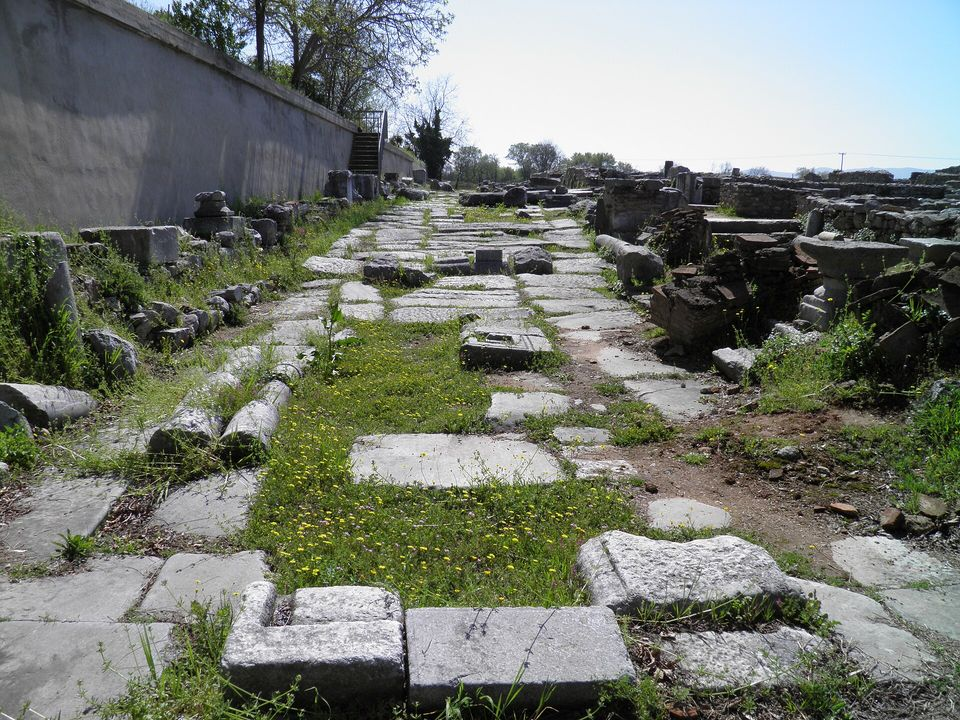

Parada 5 · Para ir mais fundo
Gente de confiança
Lição 5Sem correio, cartas e ofertas viajavam nas mãos de alguém de confiança. Paulo tinha dois: Timóteo e Epafrodito
Sete marcos
Nas estradas romanas, a cada milha havia um marco de pedra. Esta página é uma estrada com sete marcos: os dois primeiros mostram o cenário e a ideia de equipe; os outros cinco seguem Filipenses 2.19 a 30.
Paulo acabou de mostrar Cristo, que se fez servo (lição 3), e de pedir que a igreja brilhe (lição 4). Agora apresenta duas pessoas reais que viviam assim.
Baseado na Lição 5 da revista Lições Bíblicas Jovens (CPAD), com textos bíblicos da ARC.
Slides da aulaA mesma estrada em 25 slides para projetar, com notas do professor.
Abrir os slidesMarco 1 · A estrada · o cenário
A estrada e as cartas


A Via Egnatia foi uma das grandes estradas do Império. Construída nos anos 140 a.C. por Cneu Egnácio, procônsul da Macedônia, ela saía de Dirráquio, no mar Adriático, e cruzava os Bálcãs até Tessalônica, Anfípolis e Filipos, chegando depois a Bizâncio: uns 1.120 km. A cada milha romana (cerca de 1,48 km) havia um miliário, um marco de pedra. O da foto, hoje no Museu de Tessalônica, traz o nome de Egnácio e o número CCLX: 260 milhas.
Foi por essa estrada que Paulo, Silas, Timóteo e Lucas chegaram a Filipos (At 16.11 a 17.1). E é por ela que andam os mensageiros desta lição.
De Roma a Filipos: as cinco viagens
Para ir de Roma a Filipos, o caminho era a Via Ápia até Brundísio, no sul da Itália, a travessia do Adriático até Dirráquio e a Via Egnatia até Filipos. São uns 1.300 km. A pé, a uns 24 km por dia, mais de sete semanas para cada trecho. Fp 2.25 a 30 pressupõe pelo menos cinco viagens assim:
- Roma → FiliposNotícia: Paulo está preso Fp 1.12 e 13
- Filipos → RomaEpafrodito leva a oferta Fp 4.18
- Roma → FiliposNotícia: Epafrodito adoeceu Fp 2.26
- Filipos → RomaA igreja está aflita Fp 2.26
- Roma → FiliposEpafrodito volta, com esta carta Fp 2.25 e 28
Cartas que andavam a pé

O correio oficial do Império, o cursus publicus, só levava mensagens do governo. Gente comum mandava cartas por amigos, escravos de confiança ou viajantes que iam na mesma direção. A tabuinha da foto, encontrada no forte romano de Vindolanda, na Inglaterra, é um convite de aniversário escrito por volta de 100 d.C.: Cláudia Severa chama a amiga Lepidina para a sua festa. Não tem relação com Paulo, mas mostra como uma carta pessoal viajava: nas mãos de alguém.
Por isso o mensageiro importava tanto. Ele levava a carta, completava o recado de viva voz e garantia que ela era autêntica. Epafrodito trouxe a oferta de Filipos a Paulo e, ao voltar para casa, quase certamente levou esta carta. Os filipenses a ouviram ler com o próprio Epafrodito ali, vivo, na frente deles.
Filipenses 4.18 · ARC
Mas bastante tenho recebido e tenho abundância; cheio estou, depois que recebi de Epafrodito o que da vossa parte me foi enviado, como cheiro de suavidade e sacrifício agradável e aprazível a Deus.
Fontes: Livius.org, "Via Egnatia" · Livius.org, "Thessaloniki, Via Egnatia, milestone" · The Berean Expositor, v. 45, p. 170 · Wikipedia (inglês), "Cursus publicus" · Wikipedia (inglês), "Vindolanda tablets" · Bíblia Sagrada, Almeida Revista e Corrigida (ARC). Sociedade Bíblica do Brasil.
Marco 2 · Ninguém serve sozinho · a equipe
Ninguém serve sozinho
A revista abre a lição com uma ideia simples: "quando Deus quer realizar algo significativo, Ele trabalha em conjunto com pessoas" (Introdução). Jesus não escolheu os Doze só para mandá-los; primeiro, para estarem com Ele:
Marcos 3.14 · ARC
E nomeou doze para que estivessem com ele e os mandasse a pregar
Paulo também nunca trabalhou sozinho. Em Romanos 16 ele cita mais de vinte pessoas pelo nome: cooperadores, anfitriões, parentes, gente que arriscou a vida por ele. A revista lembra que ele tinha amigos judeus e gentios, gente fraca como o escravo Onésimo (Cl 4.9) e forte como Filemom, e até alguns "da casa de César" (Fp 4.22). E compara essa habilidade ao que hoje se chama de networking.
Eclesiastes 4.9 e 10 · ARC
Melhor é serem dois do que um, porque têm melhor paga do seu trabalho. Porque, se um cair, o outro levanta o seu companheiro; mas ai do que estiver só; pois, caindo, não haverá outro que o levante.
Conexão
Interpessoal
"Pontes entre pessoas, grupos e comunidades, permitindo interação, cooperação e crescimento mútuo" (revista, I.1).
Intrapessoal
Lidar bem com os próprios sentimentos: autoconhecimento, autocontrole, automotivação. "Somente quem desenvolve saúde emocional e espiritual dentro de si está preparado para influenciar e cuidar de outras pessoas."
E com o Senhor
Amar a Deus e ao próximo: os dois mandamentos que resumem a Lei (Mt 22.36 a 40). "Os relacionamentos [...] são, na verdade, o cerne do viver cristão" (I.2).
Qual o valor de nos relacionarmos bem com as pessoas? "Não existe vida cristã saudável sem comunhão, cuidado com pessoas e relacionamentos verdadeiros" (Ponto importante da revista).
Fontes: Bíblia Sagrada, Almeida Revista e Corrigida (ARC). Sociedade Bíblica do Brasil. · Lições Bíblicas Jovens, 4º trimestre de 2026, Lição 5
Marco 3 · Um igual a mim · Fp 2.19 a 21
Um igual a mim
Filipenses 2.19 a 21 · ARC
E espero, no Senhor Jesus, que em breve vos mandarei Timóteo, para que também eu esteja de bom ânimo, sabendo dos vossos negócios. Porque a ninguém tenho de igual sentimento, que sinceramente cuide do vosso estado; porque todos buscam o que é seu e não o que é de Cristo Jesus.
Paulo está preso e quer notícias. Não pode ir, então pensa em quem mandar, e só encontra um nome. Três palavras gregas explicam por quê:
isópsychos
"De alma igual", "igual sentimento". A palavra só aparece aqui no Novo Testamento. Timóteo sentia pelos filipenses o que o próprio Paulo sentia.
gnēsíōs
"Sinceramente", de verdade. É da família de gnḗsios, "legítimo", que Paulo usa em 1Tm 1.2: "meu verdadeiro filho na fé".
merimnáō
"Cuide": preocupar-se, ocupar a cabeça com alguém. Timóteo carregava os filipenses na mente.
O que é seu e o que é de Cristo
O versículo 21 ecoa um pedido que Paulo fez poucas linhas antes, na passagem da lição 3:
Filipenses 2.4 · ARC
Não atente cada um para o que é propriamente seu, mas cada qual também para o que é dos outros.
Em Fp 2.4, Paulo pede. Em Fp 2.21, mostra que a maioria não fazia, e que Timóteo fazia. A revista diz que "todo aquele que ama, necessariamente, cuida", e lembra que em At 20.28 Paulo manda os obreiros "apascentarem" a igreja: poimaínō, cuidar como pastor (tópico II.2). "Uma das características de um obreiro aprovado, portanto, é que ele cuide das pessoas como se fossem ovelhas indefesas."
"Há ministros que não pregam, ensinam, administram, pastoreiam ou escrevem a partir de uma preocupação genuína com o avanço da mensagem de Cristo, mas o fazem buscando os seus próprios interesses, glória, prestígio e ambição egoísta."
Bíblia de Estudo Pentecostal, Edição Global, CPAD, pp. 2201 e 2202 (Subsídio da revista)
Fontes: Concordância de Strong, G2473 isópsychos · Concordância de Strong, G1104 gnēsíōs · Concordância de Strong, G3309 merimnáō · Bíblia de Estudo Pentecostal, Edição Global · Bíblia Sagrada, Almeida Revista e Corrigida (ARC). Sociedade Bíblica do Brasil. · Lições Bíblicas Jovens, 4º trimestre de 2026, Lição 5
Marco 4 · Como filho ao pai · Fp 2.22 a 24
Como filho ao pai
Texto principal da lição · Filipenses 2.22 · ARC
Mas bem sabeis qual a sua experiência, e que serviu comigo no evangelho, como filho ao pai.
Quem era Timóteo
Paulo o encontrou na sua segunda viagem, em Listra, na atual Turquia:
Atos 16.1 e 2 · ARC
E chegou a Derbe e Listra. E eis que estava ali um certo discípulo por nome Timóteo, filho de uma judia que era crente, mas de pai grego, do qual davam bom testemunho os irmãos que estavam em Listra e em Icônio.
Conhecia as Escrituras "desde a meninice" (2Tm 3.15) e herdou a fé da família: "a fé não fingida que em ti há, a qual habitou primeiro em tua avó Loide e em tua mãe Eunice" (2Tm 1.5). Entrou jovem na equipe e viajava com Paulo quando a igreja de Filipos nasceu (At 16.1 a 3; 17.14). Assina esta carta com ele (Fp 1.1), e Paulo o mandou a Tessalônica (1Ts 3.2) e a Corinto (1Co 4.17), sempre para cuidar de igrejas.
1 Timóteo 4.12 · ARC
Ninguém despreze a tua mocidade; mas sê o exemplo dos fiéis, na palavra, no trato, no amor, no espírito, na fé, na pureza.
Experiência e serviço
dokimḗ, "experiência"
Caráter aprovado depois de passar por testes, como um metal provado no fogo. Os filipenses tinham visto Timóteo de perto: "bem sabeis".
douleúō, "serviu"
Servir como escravo. É a mesma família de doûlos, a "forma de servo" que Cristo tomou (Fp 2.7) e o título de Paulo e Timóteo na abertura da carta (Fp 1.1).
Repare que Paulo não diz "me serviu", mas "serviu comigo no evangelho". Pai e filho trabalhando juntos, para o mesmo Senhor. A revista chama isso de "servir antes de liderar": Timóteo "não usava o ministério para benefício próprio, mas servia ao ministério com dedicação", "deixando um exemplo de que liderança no Reino de Deus não é sobre posição, mas sobre serviço" (tópico II.3).
Além do conhecimento, o que mais é necessário para a formação de um líder cristão? "A liderança não acontece apenas pelo conhecimento, mas também pelo aprendizado da obediência, pela experiência de submissão, fidelidade e constância no serviço" (revista, II.3).
Fontes: Concordância de Strong, G1382 dokimḗ · Concordância de Strong, G1398 douleúō · Bíblia Sagrada, Almeida Revista e Corrigida (ARC). Sociedade Bíblica do Brasil. · Lições Bíblicas Jovens, 4º trimestre de 2026, Lição 5
Marco 5 · Irmão, cooperador, soldado · Fp 2.25
Irmão, cooperador, soldado
Filipenses 2.25 · ARC
Julguei, contudo, necessário mandar-vos Epafrodito, meu irmão, e cooperador, e companheiro nos combates, e vosso enviado para prover às minhas necessidades;
Epafrodito só aparece em Filipenses. O Dicionário Bíblico Baker, citado no Subsídio, resume: foi "um mensageiro daquela igreja que levou um presente para Paulo e serviu às suas necessidades em favor deles". O nome vem de Afrodite, a deusa grega do amor, sinal de que ele provavelmente vinha de uma família pagã. Não confunda com Epafras, de Colossos (Cl 1.7; 4.12).
Cinco títulos num versículo
| ARC | Grego | O que quer dizer |
|---|---|---|
| Irmão | adelphós | Da mesma família na fé. |
| Cooperador | synergós | Colega de trabalho. Paulo usa a mesma palavra para Timóteo (Rm 16.21) e para Priscila e Áquila (Rm 16.3). |
| Companheiro nos combates | systratiṓtēs | Companheiro de armas, soldado do mesmo pelotão. Em Paulo, só aqui e em Fm 2. |
| Enviado | apóstolos | Mensageiro oficial da igreja de Filipos. Aqui não é um dos Doze, mas alguém mandado com uma missão. |
| Para prover | leitourgós | Servidor público; também quem servia no templo. A oferta era um culto: "sacrifício agradável e aprazível a Deus" (Fp 4.18). |
Companheiro na hora difícil
A revista destaca a coragem: "muitas vezes encontramos indivíduos que se aproximam quando tudo está bem, quando não há perseguição [...] Mas Epafrodito estava disposto a seguir na vanguarda da batalha juntamente com o apóstolo Paulo" (III.2). Visitar um preso acusado diante de Roma não era passeio: era associar o próprio nome ao dele. A revista o compara a Josué e a Arão e Hur:
Êxodo 17.12 · ARC
Porém as mãos de Moisés eram pesadas; por isso, tomaram uma pedra e a puseram debaixo dele, para assentar-se sobre ela; e Arão e Hur sustentaram as suas mãos, um de um lado, e o outro, do outro; assim ficaram as suas mãos firmes até que o sol se pôs.
"Como nós agimos diante de um combate contra a Igreja de Cristo? Nossas redes sociais servem para difundir o conflito ou para glorificar o nome do Senhor?" (revista, III.2)
Fontes: Concordância de Strong, G4904 synergós · Concordância de Strong, G4961 systratiṓtēs · Concordância de Strong, G3011 leitourgós · Dicionário Bíblico Baker · Bíblia Sagrada, Almeida Revista e Corrigida (ARC). Sociedade Bíblica do Brasil. · Lições Bíblicas Jovens, 4º trimestre de 2026, Lição 5
Marco 6 · Angustiado por amor · Fp 2.26 a 28
Angustiado por amor
Filipenses 2.26 · ARC
porquanto tinha muitas saudades de vós todos e estava muito angustiado de que tivésseis ouvido que ele estivera doente.
Epafrodito adoeceu longe de casa e quase morreu. Mas o que o deixou angustiado não foi a doença: foi saber que a igreja estava preocupada com ele. A revista se admira: "Que grande homem era Epafrodito, que preferia sofrer calado a preocupar a igreja em Filipos!" (III.3).
Uma palavra do Getsêmani
"Muito angustiado" traduz adēmonéō. O verbo aparece só três vezes no Novo Testamento. As outras duas são de Jesus, na noite em que foi preso:
Mateus 26.37 e 38 · ARC
E, levando consigo Pedro e os dois filhos de Zebedeu, começou a entristecer-se e a angustiar-se muito. Então, lhes disse: A minha alma está cheia de tristeza até à morte; ficai aqui e vigiai comigo.
O mesmo peso que o Senhor sentiu no Getsêmani, um servo sentiu por amor a uma igreja. Servir de verdade também dói.
"Mas Deus se apiedou dele"
Filipenses 2.27 e 28 · ARC
E, de fato, esteve doente e quase à morte, mas Deus se apiedou dele e não somente dele, mas também de mim, para que eu não tivesse tristeza sobre tristeza. Por isso, vo-lo enviei mais depressa, para que, vendo-o outra vez, vos regozijeis, e eu tenha menos tristeza.
Duas coisas chamam a atenção. Primeiro, Paulo chama a cura de misericórdia de Deus, não de prêmio pela fé de ninguém. Servos fiéis também adoecem: o próprio Paulo escreve que deixou "Trófimo doente em Mileto" (2Tm 4.20). Segundo, o apóstolo da alegria não esconde a tristeza: tinha medo de ter "tristeza sobre tristeza". Na carta mais alegre de Paulo, alegria e dor convivem.
Fontes: Concordância de Strong, G85 adēmonéō · Dicionário Bíblico Baker · Bíblia Sagrada, Almeida Revista e Corrigida (ARC). Sociedade Bíblica do Brasil. · Lições Bíblicas Jovens, 4º trimestre de 2026, Lição 5
Marco 7 · Tende-o em honra · Fp 2.29 e 30
Tende-o em honra
Filipenses 2.29 e 30 · ARC
Recebei-o, pois, no Senhor, com todo o gozo, e tende-o em honra: porque, pela obra de Cristo, chegou até bem próximo da morte, não fazendo caso da vida, para suprir para comigo a falta do vosso serviço.
Quem se arrisca
"Não fazendo caso da vida" traduz paraboleúomai, "expor-se ao perigo, arriscar". O verbo só aparece aqui no Novo Testamento. Epafrodito fez o que a igreja inteira não podia fazer: foi até Roma e supriu "a falta do vosso serviço". A palavra "serviço" é leitourgía, a mesma do versículo 17: a viagem dele foi uma oferta.
Ele não foi o único. Paulo diz de Priscila e Áquila:
Romanos 16.3 e 4 · ARC
Saudai a Priscila e a Áquila, meus cooperadores em Cristo Jesus, os quais pela minha vida expuseram a sua cabeça; o que não só eu lhes agradeço, mas também todas as igrejas dos gentios.
Curiosidade. Séculos depois, em Alexandria, no Egito, havia um grupo de cristãos que cuidava de doentes e enterrava os mortos nas epidemias, arriscando a própria vida. Eram chamados parabalani ou parabolani, nome da mesma família de palavras de Fp 2.30: "os que se arriscam". Uma lei de 416 limitou o grupo a 500 membros em Alexandria, número aumentado para 600 dois anos depois. Não se sabe quando o nome surgiu, então não dá para dizer que eles se inspiraram em Epafrodito; mas a palavra ficou ligada a quem se expõe para cuidar dos outros.
O hino na vida real
Timóteo e Epafrodito não estão no capítulo 2 por acaso. Logo depois do hino de Cristo (Fp 2.5 a 11, lição 3), Paulo mostra o mesmo caminho em gente comum. A ligação aparece até nas palavras: "obediente até à morte" (2.8) e "chegou até bem próximo da morte" (2.30) são a mesma expressão grega, méchri thanátou.
| Cristo | Timóteo | Epafrodito | |
|---|---|---|---|
| Não olha só para o que é seu | "Não atente cada um para o que é propriamente seu" (2.4) | "Todos buscam o que é seu", menos Timóteo (2.20 e 21) | Deixou casa e igreja para suprir o que faltava a Paulo (2.25 e 30) |
| Serve | "Tomando a forma de servo" (2.7) | "Serviu comigo no evangelho" (2.22) | "Para prover às minhas necessidades" (2.25) |
| Até à morte | "Obediente até à morte" (2.8) | Ficou ao lado de Paulo preso (1.1; 2.19) | "Chegou até bem próximo da morte" (2.30) |
| É honrado | "Deus o exaltou soberanamente" (2.9) | "Bem sabeis qual a sua experiência" (2.22) | "Tende-o em honra" (2.29) |
Uma honra diferente
Em Filipos, colônia romana, a honra ia para quem tinha cargos e títulos, gravados em pedra no fórum (lição 3). Paulo manda a igreja honrar outra coisa: quem serviu. "Em honra" é éntimos, "precioso, de valor". A revista lembra Calebe, "que perseverou e foi honrado por sua fidelidade (Js 14.6 a 15)", e conclui que Deus coloca em lugar de destaque "todo aquele que se submete à vontade de Deus e ama o rebanho do Senhor verdadeiramente" (III.3).
Mateus 25.21 · ARC
E o seu senhor lhe disse: Bem está, servo bom e fiel. Sobre o pouco foste fiel, sobre muito te colocarei; entra no gozo do teu senhor.
A Conclusão da revista: "talvez, o maior desafio de um líder seja realizar, por meio de outros, o que ele não conseguirá fazer sozinho. A isso chamamos de gestão de pessoas, o ponto central da liderança; fazer com que as pessoas juntas, em harmonia, desenvolvam todo o seu potencial. Paulo conseguiu isso em seu ministério, contando com Timóteo e Epafrodito".
Fontes: Concordância de Strong, G3851 paraboleúomai · New Brunswick Theological Seminary, "Endangering one’s life… for the work of the Messiah" (paraboleusamenos, Fp 2.30) · Wikipedia (inglês), "Parabalani" · Concordância de Strong, G1784 éntimos · Bíblia Sagrada, Almeida Revista e Corrigida (ARC). Sociedade Bíblica do Brasil. · Lições Bíblicas Jovens, 4º trimestre de 2026, Lição 5
Os dois servos
O quadro que a Orientação Pedagógica da revista sugere montar com a turma durante a aula.
Palavras para entender
- Miliário
- Marco de pedra posto a cada milha romana (cerca de 1,48 km) nas estradas do Império.
- Cursus publicus
- O correio e transporte oficial do Império Romano, reservado ao governo.
- Isópsychos
- "De alma igual", "igual sentimento". Só em Fp 2.20.
- Dokimḗ
- "Experiência" em Fp 2.22: caráter aprovado depois de testado.
- Cooperador
- Em grego synergós, "colega de trabalho". Paulo usa para Timóteo, Epafrodito, Priscila e Áquila.
- Leitourgía
- "Serviço" (Fp 2.17 e 30): serviço público ou sagrado. Dela vem a palavra "liturgia".
- Adēmonéō
- "Estar muito angustiado". Só em Mt 26.37, Mc 14.33 e Fp 2.26.
- Paraboleúomai
- "Arriscar, expor-se ao perigo", traduzido "não fazendo caso da vida" (Fp 2.30).
Fontes e referências
De onde vieram os fatos e as citações desta página e dos slides.
- Lições Bíblicas Jovens, 4º trimestre de 2026, Lição 5: "Exemplo de servos fiéis: Timóteo e Epafrodito". Comentarista: Reynaldo Odilo. Rio de Janeiro: CPAD, 2026.
- Bíblia Sagrada, Almeida Revista e Corrigida (ARC). Sociedade Bíblica do Brasil. Abrir
- Bíblia de Estudo Pentecostal, Edição Global. Rio de Janeiro: CPAD, 2022, pp. 2201 e 2202 (citada no Subsídio da Lição 5).
- Dicionário Bíblico Baker. Rio de Janeiro: CPAD, 2023, p. 173, verbete "Epafrodito" (citado no Subsídio da Lição 5).
- BARRETO, Anderson. Ensinando com Excelência na Escola Dominical. Rio de Janeiro: CPAD, 2023 (indicado na "Estante do professor" da Lição 5).
- Livius.org, "Via Egnatia": construída nos anos 140 a.C. por Cneu Egnácio, de Dirráquio, no Adriático, passando por Tessalônica, Anfípolis e Filipos; a travessia até Brundísio ligava a estrada à Via Ápia. Abrir
- Livius.org, "Thessaloniki, Via Egnatia, milestone": o miliário com "CCLX" e o nome de Cneu Egnácio, procônsul (por volta de 142 a.C.), no Museu Arqueológico de Tessalônica. Abrir
- The Berean Expositor, v. 45, p. 170: de Roma a Filipos, cerca de 360 milhas pela Via Ápia, a travessia do Adriático e cerca de 370 milhas pela Via Egnatia; a pé, mais de sete semanas (estimativa de W. M. Ramsay); as quatro viagens pressupostas em Fp 2.25 a 30. Abrir
- Wikipedia (inglês), "Vindolanda tablets": as cartas em tabuinhas de madeira do forte romano de Vindolanda (por volta de 100 d.C.), entre elas o convite de aniversário de Cláudia Severa (tabuinha 291), no Museu Britânico. Abrir
- Wikipedia (inglês), "Cursus publicus": o serviço de correio e transporte do Império Romano, reservado a mensagens e funcionários do governo. Abrir
- Wikipedia (inglês), "Parabalani": a irmandade cristã que cuidava de doentes e enterrava mortos, com risco da própria vida; em Alexandria, a lei limitou o grupo a 500 membros (416) e depois a 600 (418). Abrir
- New Brunswick Theological Seminary, "Endangering one’s life… for the work of the Messiah" (paraboleusamenos, Fp 2.30): o verbo aparece uma só vez no Novo Testamento; o substantivo parabolanoi indica os que arriscavam a vida cuidando de doentes. Abrir
- Concordância de Strong, G2473 isópsychos: "de alma igual, com o mesmo sentimento"; só em Fp 2.20. Abrir
- Concordância de Strong, G1104 gnēsíōs: "sinceramente, de modo genuíno", da família de gnḗsios, o filho legítimo (Fp 2.20; 1Tm 1.2). Abrir
- Concordância de Strong, G3309 merimnáō: "preocupar-se, cuidar", traduzido "cuide" em Fp 2.20. Abrir
- Concordância de Strong, G1382 dokimḗ: "prova, caráter aprovado depois de testado", traduzido "experiência" em Fp 2.22. Abrir
- Concordância de Strong, G1398 douleúō: "servir como escravo", traduzido "serviu" em Fp 2.22. Abrir
- Concordância de Strong, G4904 synergós: "cooperador, colega de trabalho" (Fp 2.25; Rm 16.3 e 21). Abrir
- Concordância de Strong, G4961 systratiṓtēs: "companheiro de armas", traduzido "companheiro nos combates" (Fp 2.25; Fm 2). Abrir
- Concordância de Strong, G3011 leitourgós: "servidor público", também usado para o serviço sagrado; em Fp 2.25, "para prover"; e G3009 leitourgía, "serviço" (Fp 2.17 e 30). Abrir
- Concordância de Strong, G85 adēmonéō: "estar muito angustiado". Só três vezes no Novo Testamento: Mt 26.37, Mc 14.33 (Jesus no Getsêmani) e Fp 2.26. Abrir
- Concordância de Strong, G3851 paraboleúomai: "expor-se ao perigo, arriscar", traduzido "não fazendo caso da vida"; só em Fp 2.30. Abrir
- Concordância de Strong, G1784 éntimos: "precioso, honrado", traduzido "tende-o em honra" (Fp 2.29; Lc 7.2; 1Pe 2.4 e 6). Abrir
Para continuar
- Ensinando com Excelência na Escola Dominical, de Anderson Barreto (CPAD, 2023): indicado na "Estante do professor" da revista desta lição.
- Dicionário Bíblico Baker (CPAD, 2023): citado no Subsídio, com o verbete "Epafrodito".
- Bíblia de Estudo Pentecostal, Edição Global (CPAD, 2022): citada no Subsídio sobre Timóteo.
- Os vídeos e podcasts desta lição estão na Parada 5.